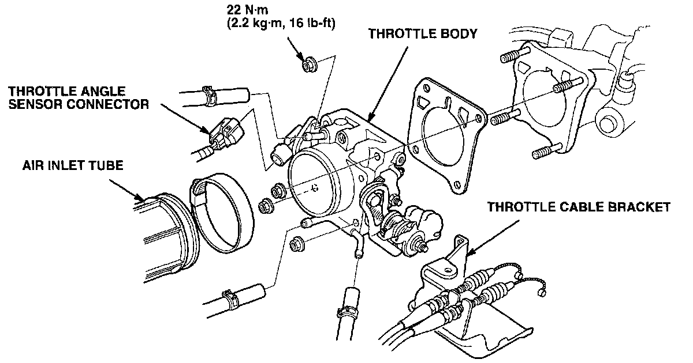
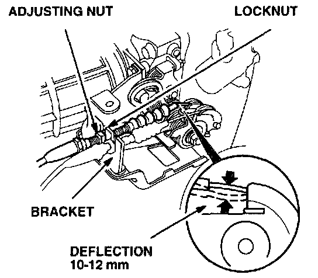
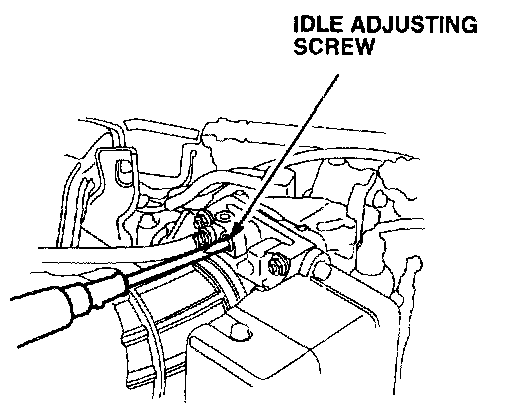
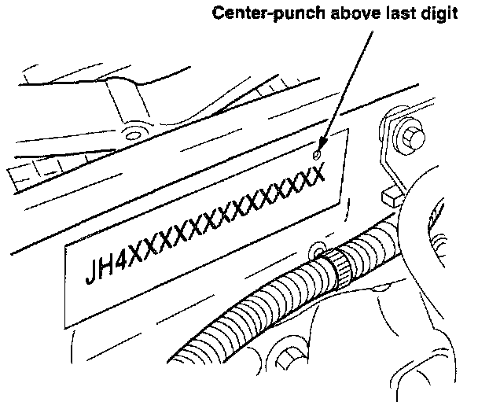

Corrective Action
Replace the throttle body with the updated assembly listed under PARTS INFORMATION.1. Remove the throttle body cable cover.

2. Remove the two hoses from the air inlet tube. Remove the resonator mounting bolt from the top of the radiator. Loosen the hose clamp and remove the air inlet tube from the throttle body.
3. Pinch off the coolant hoses so they will not leak; then, remove them from the throttle body.
4. Disconnect all vacuum hoses from the throttle body.
5. Remove the two bolts mounting the throttle cable bracket to the front of the throttle body.
6. Disconnect the electrical connector from the throttle angle sensor.
7. Remove the four throttle body mounting nuts. Remove the throttle body.
8. Remove the throttle cable bracket mounting bolt from the underside of the throttle body. Disconnect the throttle cable and cruise control cable from the linkage.
9. Attach the throttle cable and cruise control cable to the linkage of the new throttle body. Install the bracket to the underside with the original bolt.
10. Install the throttle body with a new gasket. Tighten the mounting nuts to 22 Nm (2.2 kg-m, 16 lb-ft).
11. Reinstall the cable bracket mounting bolts in the front of the throttle body. Tighten the bolts to 10 Nm (1.0 kg-m, 7.3 lb-ft).
12. Connect the electrical connector to the throttle angle sensor.
13. Reinstall the vacuum hoses.
14. Reinstall the coolant hoses.
15. Reinstall the air inlet tube to the throttle body. Reinstall the resonator on top of the radiator. Connect the hoses to the air inlet tube.

16. Check the throttle cable free-play. It should have 10-12 mm of deflection. If it is out of specification, adjust it according to the procedure on page 11-112 of the service manual.
17. Check the cruise control cable adjustment according to the procedure in the service manual (Sedan: page 23-324, Coupe: page 23-350). Adjust if necessary.
18. Start the engine and allow it to reach normal operating temperature (cooling fan comes on).

19. Set the idle speed:
^ Connect a tachometer to the igniter loop or the tachometer connector.
^ Disconnect the 2-P connector from the EACV.
^ Turn on the headlights (high beam), the rear window defogger, and the heater blower fan (high speed). Make sure the A/C is off.
^ Adjust the idle speed to 500 +/- 50 rpm with the transmission in Neutral or Park.
20. Turn off the engine and headlights, reconnect the EACV connector, and remove the tachometer.
21. Remove fuse 15 from the under-dash fuse box for 15 seconds to reset the ECM.
22. Reinstall the throttle body cable cover.

23. Center-punch a completion mark over the last digit of the engine compartment VIN.